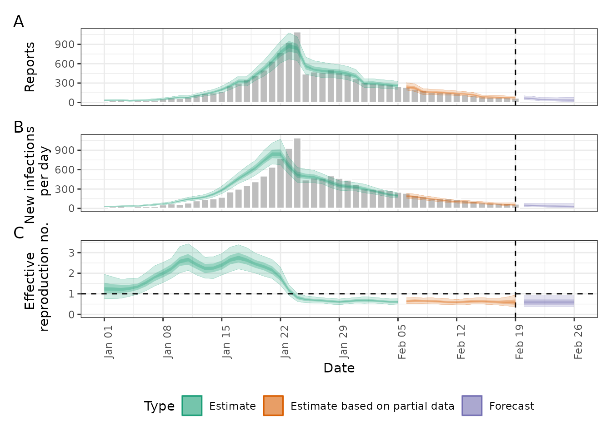
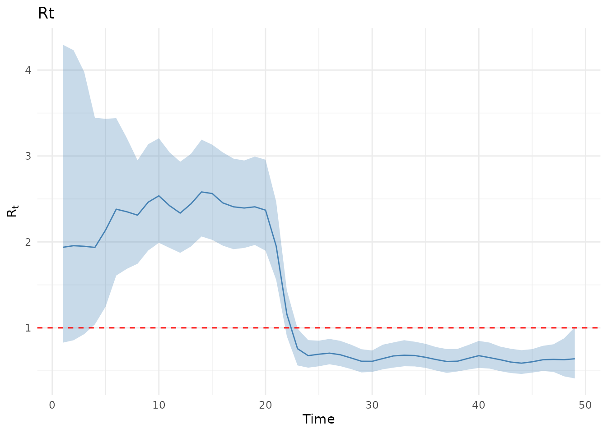

vignettes/epinow2-comparison.Rmd
epinow2-comparison.RmdEpiNow2 is a popular R package for estimating time-varying reproduction numbers using renewal equation models. This vignette shows how to replicate a typical EpiNow2 analysis using EpiAwareR’s compositional approach.
Both packages use renewal equations and Bayesian inference, but EpiAwareR’s compositional design allows you to build a much wider class of models by assembling components.
We’ll replicate a standard EpiNow2 workflow for estimating from case data.
We generate simulated epidemic data with an intervention effect at day 25:
# Generate test data
set.seed(123)
dates <- seq.Date(as.Date("2024-01-01"), by = "day", length.out = 50)
# Epidemic with intervention at day 25
infections <- numeric(50)
infections[1:7] <- 30
for (i in 8:50) {
rt <- if (i < 25) 2.0 else 0.7 # Intervention effect
infections[i] <- rpois(1, rt * mean(infections[max(1, i - 7):(i - 1)]))
}
outbreak_data <- data.frame(
date = dates,
confirm = as.integer(pmax(round(infections + rnorm(50, 0, 5)), 1)) # Integer counts
)
head(outbreak_data, 10)
#> date confirm
#> 1 2024-01-01 37
#> 2 2024-01-02 29
#> 3 2024-01-03 38
#> 4 2024-01-04 22
#> 5 2024-01-05 33
#> 6 2024-01-06 31
#> 7 2024-01-07 31
#> 8 2024-01-08 57
#> 9 2024-01-09 73
#> 10 2024-01-10 63First, we run EpiNow2. Note: EpiNow2 must be loaded and run before EpiAwareR due to a runtime conflict between Stan and Julia.
library(EpiNow2)
# Define generation time (mean ~5 days)
generation_time <- Gamma(
mean = 5.0,
sd = 2.0
)
# No reporting delay for this simple example (data is directly observed)
# For real data, you would add: delays = delay_opts(reporting_delay)
# Use daily random walk for Rt (alternative to GP)
rt_settings <- rt_opts(
prior = Normal(mean = 1, sd = 0.5), # Tighter prior
rw = 1 # Daily random walk
)
# Run estimation with timing
# Wrap in tryCatch to handle CI environments where Stan may fail
epinow2_results <- NULL
epinow2_time <- tryCatch({
system.time({
epinow2_results <- epinow(
outbreak_data,
generation_time = generation_time_opts(generation_time),
rt = rt_settings,
stan = stan_opts(cores = 2, chains = 2, samples = 500, warmup = 250)
)
})
}, error = function(e) {
message("EpiNow2 fitting failed (may occur in some CI environments): ", e$message)
NULL
})
if (!is.null(epinow2_results)) {
cat("EpiNow2 runtime:", epinow2_time["elapsed"], "seconds\n")
summary(epinow2_results)
plot(epinow2_results)
} else {
cat("EpiNow2 results not available - see message above\n")
}
#> EpiNow2 runtime: 52.568 seconds
The rw = 1 option creates a daily random walk for
,
which is an alternative choice to the default Gaussian Process.
Now we load EpiAwareR and replicate the analysis. We explicitly build the model from components:
# 1. Latent process: daily random walk for Rt
# AR(1) with damping ≈ 1 creates a random walk (equivalent to EpiNow2's rw=1)
latent <- AR(
order = 1,
damp_priors = list(truncnorm(0.99, 0.01, 0.9, 1)), # Near 1 for random walk
init_priors = list(norm(log(1.5), 0.3)), # log(Rt) centered at 1.5 for growing epidemic
std_prior = halfnorm(0.1)
)
#> Julia version 1.11.8 at location /opt/hostedtoolcache/julia/1.11.8/x64/bin will be used.
#> Loading setup script for JuliaCall...
#> Finish loading setup script for JuliaCall.
#> EpiAware Julia backend loaded successfully
# 2. Infection model: renewal equation with generation time
# EpiNow2: Gamma(mean=5, sd=2) -> shape=6.25, scale=0.8
infection <- Renewal(
gen_distribution = gamma_dist(6.25, 0.8),
initialisation_prior = norm(log(30), 0.5) # Match simulated initial infections
)
# 3. Observation model: negative binomial (no delay for this simple example)
observation <- NegativeBinomialError(
cluster_factor_prior = halfnorm(0.5)
)
# 4. Compose into complete model
model <- EpiProblem(
epi_model = infection,
latent_model = latent,
observation_model = observation,
tspan = c(1, 50)
)
print(model)
#> <EpiAware Epidemiological Model>
#> Time span: 1 to 50
#> Components:
#> - Infection model: epiaware_renewal
#> - Latent model: epiaware_ar
#> - Observation model: epiaware_negbin
# Run estimation with timing (2 chains to match EpiNow2)
epiaware_time <- system.time({
results <- fit(
model = model,
data = outbreak_data,
method = nuts_sampler(
warmup = 250,
draws = 500,
chains = 2
)
)
})
#> Generating Turing.jl model...
#> Running NUTS sampling...
#> Chains: 2
#> Warmup: 250
#> Draws: 500
#> Running Pathfinder initialization...
#> Pathfinder initialization failed, using default initialization...
#> Processing results...
cat("EpiAwareR runtime:", epiaware_time["elapsed"], "seconds\n")
#> EpiAwareR runtime: 529.725 seconds
# View results
print(results)
#> <EpiAware Model Fit>
#>
#> Model:
#> Time span: 1 to 50
#> Infection model: epiaware_renewal
#> Latent model: epiaware_ar
#> Observation model: epiaware_negbin
#>
#> Sampling:
#> Method: NUTS
#> Chains: 2
#> Draws: 500 (per chain)
#>
#> Convergence:
#> Max Rhat: 1.093
#> Min ESS (bulk): 75
#> Warning: Some parameters have ESS < 100
#>
#> Use summary() for parameter estimates
#> Use plot() to visualize results
summary(results)
#> # A tibble: 66 × 10
#> variable mean median sd mad q5 q95 rhat ess_bulk
#> <chr> <dbl> <dbl> <dbl> <dbl> <dbl> <dbl> <dbl> <dbl>
#> 1 latent.ar_init.… 0.348 0.350 0.247 0.255 -0.0342 0.747 0.999 513.
#> 2 latent.damp_AR.… 0.986 0.986 0.00783 0.00810 0.971 0.997 1.01 794.
#> 3 latent.std 0.180 0.180 0.0252 0.0230 0.137 0.224 1.01 152.
#> 4 latent.ϵ_t.1. -0.472 -0.438 0.788 0.775 -1.79 0.777 1.00 556.
#> 5 latent.ϵ_t.2. -0.0471 -0.0754 0.771 0.748 -1.27 1.29 1.00 596.
#> 6 latent.ϵ_t.3. -0.843 -0.838 0.786 0.774 -2.08 0.459 1.00 668.
#> 7 latent.ϵ_t.4. 0.277 0.294 0.816 0.814 -1.13 1.58 1.00 663.
#> 8 latent.ϵ_t.5. 0.0695 0.0835 0.787 0.823 -1.24 1.37 1.00 751.
#> 9 latent.ϵ_t.6. 0.476 0.472 0.770 0.758 -0.740 1.75 1.00 796.
#> 10 latent.ϵ_t.7. 1.66 1.68 0.746 0.741 0.389 2.84 1.00 616.
#> # ℹ 56 more rows
#> # ℹ 1 more variable: ess_tail <dbl>
plot(results, type = "Rt")
Note on initial uncertainty: Renewal models often show high uncertainty in the initial period (first ~7 days) due to limited infection history for estimating . This “burn-in” effect is a known characteristic of these models.
cat("Runtime comparison (2 chains each):\n")
#> Runtime comparison (2 chains each):
if (!is.null(epinow2_time)) {
cat(" EpiNow2: ", round(epinow2_time["elapsed"], 1), "seconds\n")
cat(" EpiAwareR: ", round(epiaware_time["elapsed"], 1), "seconds\n")
cat(" Speedup: ", round(epinow2_time["elapsed"] / epiaware_time["elapsed"], 1), "x\n")
} else {
cat(" EpiNow2: (not available)\n")
cat(" EpiAwareR: ", round(epiaware_time["elapsed"], 1), "seconds\n")
}
#> EpiNow2: 52.6 seconds
#> EpiAwareR: 529.7 seconds
#> Speedup: 0.1 xEpiAwareR’s compositional design makes the model structure transparent:
This explicitness enables:
For example, comparing different levels of smoothness in the random walk:
# Less smooth (more variable Rt)
rw_flexible <- AR(
order = 1,
damp_priors = list(truncnorm(0.99, 0.01, 0.9, 1)),
init_priors = list(norm(0, 0.5)),
std_prior = halfnorm(0.3) # Larger innovations
)
# More smooth (less variable Rt)
rw_smooth <- AR(
order = 1,
damp_priors = list(truncnorm(0.99, 0.01, 0.9, 1)),
init_priors = list(norm(0, 0.5)),
std_prior = halfnorm(0.05) # Smaller innovations
)
# Fit both and compare
model_flexible <- EpiProblem(..., latent_model = rw_flexible, ...)
model_smooth <- EpiProblem(..., latent_model = rw_smooth, ...)
results_flexible <- fit(model_flexible, outbreak_data)
results_smooth <- fit(model_smooth, outbreak_data)
# Visual inspection of results
# Formal model comparison would require LOO cross-validation (for fit)
# or leave-future-out validation (for forecasting)
print(results_flexible)
print(results_smooth)
sessionInfo()
#> R version 4.5.2 (2025-10-31)
#> Platform: x86_64-pc-linux-gnu
#> Running under: Ubuntu 24.04.3 LTS
#>
#> Matrix products: default
#> BLAS: /usr/lib/x86_64-linux-gnu/openblas-pthread/libblas.so.3
#> LAPACK: /usr/lib/x86_64-linux-gnu/openblas-pthread/libopenblasp-r0.3.26.so; LAPACK version 3.12.0
#>
#> locale:
#> [1] LC_CTYPE=C.UTF-8 LC_NUMERIC=C
#> [3] LC_TIME=C.UTF-8 LC_COLLATE=C.UTF-8
#> [5] LC_MONETARY=C.UTF-8 LC_MESSAGES=C.UTF-8
#> [7] LC_PAPER=C.UTF-8 LC_NAME=C.UTF-8
#> [9] LC_ADDRESS=C.UTF-8 LC_TELEPHONE=C.UTF-8
#> [11] LC_MEASUREMENT=C.UTF-8 LC_IDENTIFICATION=C.UTF-8
#>
#> time zone: UTC
#> tzcode source: system (glibc)
#>
#> attached base packages:
#> [1] stats graphics grDevices utils datasets methods base
#>
#> other attached packages:
#> [1] EpiAwareR_0.1.0.9000 EpiNow2_1.7.1
#>
#> loaded via a namespace (and not attached):
#> [1] gtable_0.3.6 tensorA_0.36.2.1 xfun_0.56
#> [4] bslib_0.9.0 ggplot2_4.0.1 QuickJSR_1.9.0
#> [7] inline_0.3.21 vctrs_0.7.1 tools_4.5.2
#> [10] generics_0.1.4 stats4_4.5.2 parallel_4.5.2
#> [13] tibble_3.3.1 pkgconfig_2.0.3 R.oo_1.27.1
#> [16] data.table_1.18.0 checkmate_2.3.3 RColorBrewer_1.1-3
#> [19] S7_0.2.1 desc_1.4.3 distributional_0.6.0
#> [22] RcppParallel_5.1.11-1 truncnorm_1.0-9 lifecycle_1.0.5
#> [25] compiler_4.5.2 farver_2.1.2 textshaping_1.0.4
#> [28] codetools_0.2-20 htmltools_0.5.9 sass_0.4.10
#> [31] yaml_2.3.12 pillar_1.11.1 pkgdown_2.2.0
#> [34] jquerylib_0.1.4 R.utils_2.13.0 cachem_1.1.0
#> [37] StanHeaders_2.32.10 JuliaCall_0.17.6 abind_1.4-8
#> [40] posterior_1.6.1 rstan_2.32.7 tidyselect_1.2.1
#> [43] digest_0.6.39 dplyr_1.1.4 purrr_1.2.1
#> [46] labeling_0.4.3 fastmap_1.2.0 grid_4.5.2
#> [49] cli_3.6.5 magrittr_2.0.4 patchwork_1.3.2
#> [52] loo_2.9.0 utf8_1.2.6 pkgbuild_1.4.8
#> [55] withr_3.0.2 runner_0.4.5 scales_1.4.0
#> [58] backports_1.5.0 lubridate_1.9.4 timechange_0.3.0
#> [61] rmarkdown_2.30 lambda.r_1.2.4 matrixStats_1.5.0
#> [64] gridExtra_2.3 futile.logger_1.4.9 ragg_1.5.0
#> [67] R.methodsS3_1.8.2 evaluate_1.0.5 knitr_1.51
#> [70] rstantools_2.6.0 rlang_1.1.7 futile.options_1.0.1
#> [73] Rcpp_1.1.1 glue_1.8.0 formatR_1.14
#> [76] jsonlite_2.0.0 R6_2.6.1 systemfonts_1.3.1
#> [79] fs_1.6.6